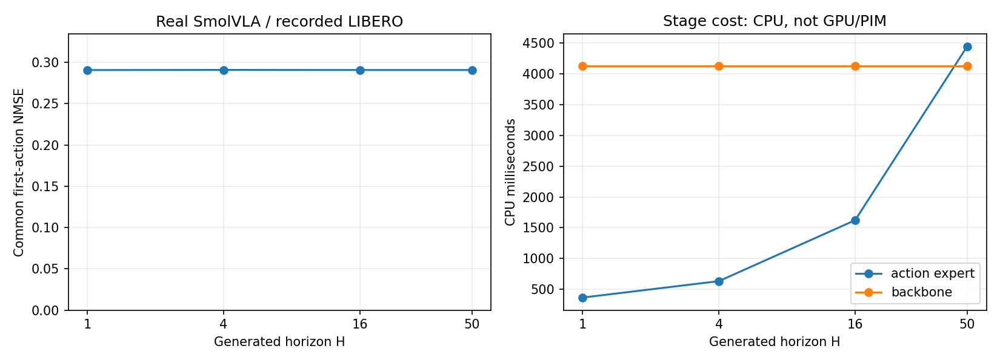

갱신(KST): 2026-11-17T06:49:47.746927+09:00
실행 상태: finished / done, offline 완료 24/24.
PID: 19584. 모델은 SmolVLA-LIBERO, native H=50/N=10, CPU float32입니다. GTX 1650/RTX 3090 성능 결과가 아닙니다.
현재 72개의 짧은 H/관측 조합에서 native H=50 대비 공통 첫 action의 최대 NMSE는 7.45e-06입니다.
이 버전 SmolVLA의 action attention은 causal mask를 사용합니다. 수학적으로 같은 prefix noise와 조건에서 앞 action은 뒤 action에 의존하지 않습니다. 실제 tensor 길이에 따른 수치 차이는 위 NMSE로 남깁니다. H 단축의 주 효과와 K 단축의 피드백 효과를 나누어 봐야 하며, GR00T에도 같은 불변성이 있다고 가정하지 않습니다.
C_ridge−B_ridge의 expert NMSE 차이는 -0.001637, episode bootstrap 95% 구간 [-0.07277742028236389, 0.05105418711900711]입니다. 독립 episode 3개 pilot이며, 이 결과를 강한 Small VLA나 GR00T의 결론으로 확대하지 않습니다.
현재 이 작은 보정기의 held-out 표본에서는 prior가 더 정확하다는 근거가 없습니다. 학습량·보정기 능력·forecast 오차를 분리해서 확인해야 합니다.
Closed-loop는 같은 공식 초기 상태를 H/K마다 재사용합니다. 아직 완료되지 않은 조합은 서로 다른 표본 수일 수 있으므로, 최종 paired 비교는 공통 완료 상태만 사용해야 합니다.
H=4에서 action expert는 CPU 총 추론 시간의 13.3%입니다. 다른 단계 비용을 그대로 두고 expert 비용만 0으로 만드는 CPU상의 이상적 속도 향상 상한도 1.15배입니다. GPU/PIM 결과는 아니지만, GPU에서 backbone까지 포함한 stage 비중을 확인해야 하는 이유입니다.
| method | completed_tasks | successes | success_rate | wilson_ci95 | errors_or_censored | post_cpu_ms | analytical_cpu_first_delay_ms |
|---|---|---|---|---|---|---|---|
| A_fresh | 3 | 2 | 0.66667 | [0.2076596008020477, 0.9385080552796037] | 0 | 7491.4 | 7491.4 |
| B_few_steps | 3 | 2 | 0.66667 | [0.2076596008020477, 0.9385080552796037] | 0 | 4479 | 4479 |
| B_ridge | 3 | 2 | 0.66667 | [0.2076596008020477, 0.9385080552796037] | 0 | 2.3535 | 2.3535 |
| C_flow_refine | 3 | 2 | 0.66667 | [0.2076596008020477, 0.9385080552796037] | 0 | 4363.3 | 11719 |
| C_ridge | 3 | 2 | 0.66667 | [0.2076596008020477, 0.9385080552796037] | 0 | 2.4143 | 7357.9 |
| D_partial | 3 | 2 | 0.66667 | [0.2076596008020477, 0.9385080552796037] | 0 | 4454.2 | 11024 |
같은 task/도착 상태가 양쪽 모두 완료된 비교:
| candidate | reference | matched_states | success_rate_delta |
|---|---|---|---|
| C_ridge | B_ridge | 3 | 0 |
| C_flow_refine | B_few_steps | 3 | 0 |
| D_partial | A_fresh | 3 | 0 |
현재 관측에서 알려진 reaching action 4개의 controller 목표 변화로 예상 도착 pose를 만들고, 과거 RGB와 결합해 prior를 계산합니다. 실제 미래 state/image는 prior 입력으로 사용하지 않습니다. 같은 초기 상태에서 동일한 reaching action을 재생해 도착 상태가 일치하는지 검증합니다. 물체 위치를 이용한 pre-grasp 구간 선택은 evaluator의 oracle 주석이며, 배포 가능한 구간 감지기를 검증한 것은 아닙니다.
각 방법은 도착 직후 첫 4개 action만 다르게 실행하고 이후에는 같은 Heavy controller를 사용합니다. 따라서 이 표는 arrival-only intervention이며 전체 fine manipulation을 Small만으로 수행하는 시스템이 아닙니다. CPU 선행 계산이 reaching의 200 ms를 초과하면 그 나머지를 analytical first delay에 포함합니다. 실제 concurrent 측정은 아닙니다. Replay는 arrival_replays/, 원자료는 arrival_closed_loop.jsonl입니다.
| method | completed_tasks | successes | success_rate | wilson_ci95 | forecast_error_mm | post_cpu_ms | errors_or_censored |
|---|---|---|---|---|---|---|---|
| A_fresh | 3 | 2 | 0.66667 | [0.2076596008020477, 0.9385080552796037] | None | 7491.4 | 0 |
| B_few_steps | 3 | 2 | 0.66667 | [0.2076596008020477, 0.9385080552796037] | None | 4479 | 0 |
| B_ridge | 3 | 2 | 0.66667 | [0.2076596008020477, 0.9385080552796037] | None | 2.3535 | 0 |
| C_flow_refine | 3 | 2 | 0.66667 | [0.2076596008020477, 0.9385080552796037] | 8.5291 | 4530.7 | 0 |
| C_ridge | 3 | 1 | 0.33333 | [0.06149194472039621, 0.7923403991979522] | 8.5291 | 2.3909 | 0 |
| D_partial | 3 | 2 | 0.66667 | [0.2076596008020477, 0.9385080552796037] | 8.5291 | 4606.5 | 0 |
같은 reaching 경로에서 과거 4 step으로만 추정한 command gain으로 위치를 예측하고, 회전은 마지막 관측 SO(3) 속도로 예측합니다. 미래 관측은 입력하지 않습니다. A/B의 행동은 prior를 사용하지 않으므로 앞 표의 동일 baseline rollout을 재사용하고 원자료에 출처를 표시합니다. Prior를 사용하는 C/D만 다시 실행합니다. 이 조건도 첫 4 action 개입이며, 원자료·GIF·오류는 arrival_calibrated/에 따로 보존합니다.
| forecast | method | tasks | teacher_position_error_mm | teacher_rotation_error_deg | within_2mm | within_5mm |
|---|---|---|---|---|---|---|
| past_calibrated_command | A_fresh | 3 | 0 | 0 | 1 | 1 |
| past_calibrated_command | B_few_steps | 3 | 1.3609 | 0.39729 | 1 | 1 |
| past_calibrated_command | B_ridge | 3 | 19.274 | 1.3322 | 0 | 0 |
| past_calibrated_command | C_flow_refine | 3 | 4.8973 | 0.53818 | 0 | 0.66667 |
| past_calibrated_command | C_ridge | 3 | 22.531 | 1.8548 | 0 | 0 |
| past_calibrated_command | D_partial | 3 | 4.401 | 0.43205 | 0.33333 | 0.66667 |
| target_sum | A_fresh | 3 | 0 | 0 | 1 | 1 |
| target_sum | B_few_steps | 3 | 1.3609 | 0.39729 | 1 | 1 |
| target_sum | B_ridge | 3 | 19.274 | 1.3322 | 0 | 0 |
| target_sum | C_flow_refine | 3 | 3.1237 | 0.72597 | 0.66667 | 0.66667 |
| target_sum | C_ridge | 3 | 23.548 | 1.7217 | 0 | 0 |
| target_sum | D_partial | 3 | 2.8049 | 0.54998 | 0.33333 | 0.66667 |
동일 도착 상태에서 첫 4 action을 실제로 실행한 endpoint를 fresh A의 endpoint와 비교합니다. 이 mm/degree는 teacher 동작과의 일치도이며 물체의 정답 grasp pose 오차가 아닙니다. 이후 Heavy가 복구해서 최종 task 성공이 같아지는 경우에도 첫 개입의 차이를 볼 수 있습니다. arrival_endpoints.jsonl에 실제 endpoint를 저장합니다.
| method | observations | episodes | expert_nmse | teacher_nmse | gripper_accuracy | post_cpu_ms |
|---|---|---|---|---|---|---|
| A_fresh | 12 | 3 | 0.52729 | 0 | 0.79167 | 8323.6 |
| B_few_steps | 12 | 3 | 0.40631 | 0.037038 | 0.79167 | 4918.8 |
| B_ridge | 12 | 3 | 0.67973 | 0.25414 | 0.77083 | 2.053 |
| C_flow_refine | 12 | 3 | 0.60635 | 0.10305 | 0.77083 | 4889.2 |
| C_ridge | 12 | 3 | 0.67809 | 0.26424 | 0.75 | 2.0944 |
| C_shuffled_ridge | 12 | 3 | 0.68577 | 0.29247 | 0.77083 | None |
| D_partial | 12 | 3 | 0.53607 | 0.089683 | 0.77083 | 4881.3 |
| forecast_prior | 12 | 3 | 0.53849 | 0.09602 | 0.77083 | 0 |
| oracle_proprio_prior | 12 | 3 | 0.52873 | 0.10151 | 0.75 | 0 |
| stale_prior | 12 | 3 | 0.58722 | 0.13825 | 0.75 | 0 |
forecast_prior: 4 frame 전 RGB + 과거 두 state의 등속 외삽. stale_prior: 과거 RGB/state 그대로. oracle_proprio_prior: 실제 미래 state + 과거 RGB인 privileged 진단 조건. A_fresh: 실제 도착 RGB/state로 처음부터 생성.
C_flow_refine: 완성 prior를 다시 noise와 섞고 최신 관측에서 2 step refine. D_partial: 과거 조건 8 step + 최신 조건 2 step. 두 방법은 최신 VLM 인코딩 비용을 포함합니다. B_few_steps: 최신 조건에서 noise부터 2 step.
B_ridge/C_ridge: 동일 가중치의 저비용 회귀기. 3 train episode에서 fresh teacher action을 학습하고 다른 3 episode에서 평가합니다. 강한 Small 모델과의 비교는 아직 필요합니다.
| comparison | metric | episodes | mean_delta | ci95 |
|---|---|---|---|---|
| C_ridge - B_ridge | normalized_action_mse | 3 | -0.0016369 | [-0.07277742028236389, 0.05105418711900711] |
| C_ridge - B_ridge | teacher_nmse | 3 | 0.010103 | [-0.07973518967628479, 0.1444637756794691] |
| C_ridge - B_ridge | gripper_accuracy | 3 | -0.020833 | [-0.0625, 0.0625] |
| C_flow_refine - B_few_steps | normalized_action_mse | 3 | 0.20004 | [0.11276070028543472, 0.2621923200786114] |
| C_flow_refine - B_few_steps | teacher_nmse | 3 | 0.066008 | [-0.025828096317127347, 0.13983008381910622] |
| C_flow_refine - B_few_steps | gripper_accuracy | 3 | -0.020833 | [-0.0625, 0.0] |
| D_partial - A_fresh | normalized_action_mse | 3 | 0.0087779 | [-0.025673553347587585, 0.04417455196380615] |
| D_partial - A_fresh | teacher_nmse | 3 | 0.089683 | [0.0050091848243027925, 0.1558002115925774] |
| D_partial - A_fresh | gripper_accuracy | 3 | -0.020833 | [-0.0625, 0.0] |
| forecast_prior - A_fresh | normalized_action_mse | 3 | 0.011194 | [-0.02373071387410164, 0.05109039321541786] |
| forecast_prior - A_fresh | teacher_nmse | 3 | 0.09602 | [0.005945899814832956, 0.1642896457342431] |
| forecast_prior - A_fresh | gripper_accuracy | 3 | -0.020833 | [-0.0625, 0.0] |
| C_ridge - C_shuffled_ridge | normalized_action_mse | 3 | -0.0076763 | [-0.09749247506260872, 0.07307853549718857] |
| C_ridge - C_shuffled_ridge | teacher_nmse | 3 | -0.028225 | [-0.15574456565082073, 0.11904038209468126] |
| C_ridge - C_shuffled_ridge | gripper_accuracy | 3 | -0.020833 | [-0.125, 0.0625] |
현재 forecast state 외삽 오차:
| cases | mean_mm | median_mm | p95_mm | max_mm |
|---|---|---|---|---|
| 24 | 8.0581 | 7.3103 | 14.849 | 21.525 |
이 값은 도착 state 예측 오차이며 action 실행 후 정밀도 mm가 아닙니다. EEF 좌표만으로 미래 손목 카메라 이미지는 결정되지 않습니다. Joint configuration, object geometry와 가림도 필요합니다. 오늘의 stale-RGB+예측-state는 현실적인 출발점 하나이며, 미래 시각 feature가 정확하다고 가정하지 않습니다. oracle_proprio_prior와 A의 차이는 state가 맞아도 남는 시각 조건 차이를 진단합니다. 실제 미래 이미지를 사전 입력으로 사용해 성능을 올리는 것은 배포 가능한 방법이 아닙니다.
| method | tasks | overlapping_windows | mean_mm | p95_mm | selected_arrival_mean_mm |
|---|---|---|---|---|---|
| constant_velocity | 3 | 67 | 8.144 | 16.514 | 11.823 |
| controller_target_sum | 3 | 67 | 123.99 | 151.47 | 121.36 |
| past_calibrated_command | 3 | 67 | 5.7075 | 12.699 | 8.5291 |
| stale_pose | 3 | 67 | 42.312 | 50.985 | 40.761 |
이미 저장한 reaching 경로를 재생해 4 step 뒤의 실제 위치와 비교합니다. Controller 목표 delta의 합, 과거 속도 외삽, 과거 4 step으로만 보정한 command gain을 비교합니다. 미래 simulator state는 채점에만 사용합니다. 겹치는 window는 독립 trial이 아닙니다. 이 진단은 현재 rollout의 prior 생성기를 교체하지 않습니다. Controller 목표를 achieved pose로 취급해서 생기는 오차와 보정 정책 자체의 실패를 구분하기 위한 결과입니다.
| H | observations | episodes | first_action_nmse | teacher_prefix_nmse | ae_cpu_ms | backbone_cpu_ms |
|---|---|---|---|---|---|---|
| 1 | 24 | 6 | 0.29066 | 2.4655e-06 | 364.61 | 4128.7 |
| 4 | 24 | 6 | 0.29083 | 7.6085e-07 | 631.38 | 4128.7 |
| 16 | 24 | 6 | 0.2907 | 0 | 1622 | 4128.7 |
| 50 | 24 | 6 | 0.2907 | 0 | 4446.3 | 4128.7 |
CPU stage 비중과 AE만 가속할 때의 비용 상한:
| H | end_to_end_cpu_ms | ae_cpu_fraction | zero_ae_cpu_speedup_bound |
|---|---|---|---|
| 1 | 4496.8 | 0.081082 | 1.0882 |
| 4 | 4763.6 | 0.13254 | 1.1528 |
| 16 | 5754.2 | 0.28188 | 1.3925 |
| 50 | 8578.5 | 0.51831 | 2.076 |
zero_ae_cpu_speedup_bound = total / (total − AE)는 다른 단계와 호출 횟수를 고정한 이상적 CPU 비용 계산입니다. PIM 성능 예측이나 GPU memory-bound 판정이 아닙니다.

H 단축은 실제 expert tensor 길이를 바꾼 실험입니다. N=10과 공통 초기 noise prefix를 유지합니다. Native 이외 길이는 재학습하지 않은 조건입니다. K의 피드백 효과는 아래 live simulator 결과에서만 판단합니다.
| H | K | episodes | successes | success_rate | wilson_ci95 | errors_or_censored | mean_sim_steps | cpu_call_p50_ms | cpu_call_p95_ms |
|---|---|---|---|---|---|---|---|---|---|
| 4 | 1 | 6 | 1 | 0.16667 | [0.030053369748306635, 0.5635028221864702] | 0 | 201.5 | 4401.9 | 4701.3 |
| 4 | 4 | 6 | 4 | 0.66667 | [0.299993315138392, 0.9032285888942195] | 0 | 139.33 | 4402.7 | 4702.3 |
| 16 | 4 | 6 | 6 | 1 | [0.6096657120978346, 1.0] | 0 | 95.667 | 5291 | 5635.8 |
| 50 | 1 | 6 | 1 | 0.16667 | [0.030053369748306635, 0.5635028221864702] | 0 | 202 | 8012.3 | 8376.2 |
| 50 | 4 | 6 | 5 | 0.83333 | [0.43649717781352987, 0.9699466302516935] | 0 | 120 | 8052 | 8355.5 |
| 50 | 10 | 6 | 3 | 0.5 | [0.1876163064826506, 0.8123836935173494] | 0 | 156.5 | 8008.9 | 8348.6 |
같은 task/초기 상태가 양쪽 모두 완료된 결과만 비교:
| candidate | reference | matched_initial_states | success_rate_delta |
|---|---|---|---|
| (4, 1) | (50, 1) | 6 | 0 |
| (4, 4) | (50, 4) | 6 | -0.16667 |
| (16, 4) | (50, 4) | 6 | 0.16667 |
| (50, 1) | (50, 10) | 6 | -0.33333 |
| (50, 4) | (50, 10) | 6 | 0.33333 |
Task 0/1/2, 공식 초기 상태 0/1, H/K 여섯 조합을 최대 7시간 동안 실행합니다. 20 Hz simulator는 추론 중 정지하므로 이는 지연을 제거한 품질 실험입니다. 완료 실패, 시간 예산에 따른 censored, 실행 오류를 구분합니다. GIF는 replays/, 진행 중 화면은 latest_view.png입니다.
LIBERO Spatial의 bowl grasp/place 성공은 좁은 공차의 insertion 정밀도를 입증하지 않습니다. 이 pilot으로 방법을 선별한 뒤, 실제 정밀 작업과 도착 오차 2/5/10/20 mm·회전 perturbation에서 검증해야 합니다. A는 이 checkpoint의 fresh 기준선이며 정확도의 수학적 상한이 아닙니다. B_few_steps는 작은 parameter 모델이 아니라 같은 모델의 적은 flow step 조건입니다.
원자료: offline.jsonl, 도착 후 rollout, H/K rollout, status.json, manifest.json, 세부 보고서. 미완료/오류가 있으면 errors.jsonl과 상위 폴더의 stderr log를 확인하세요.